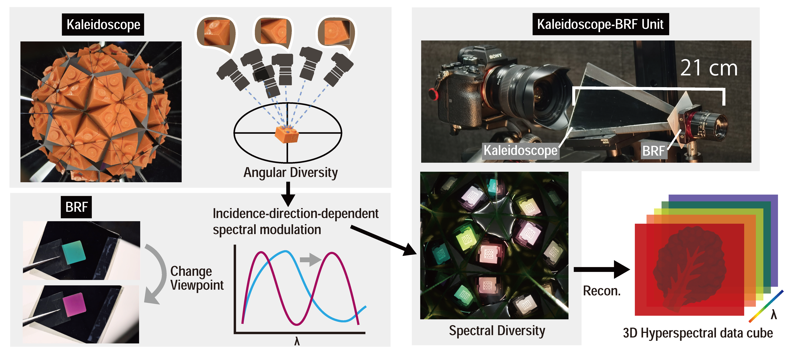
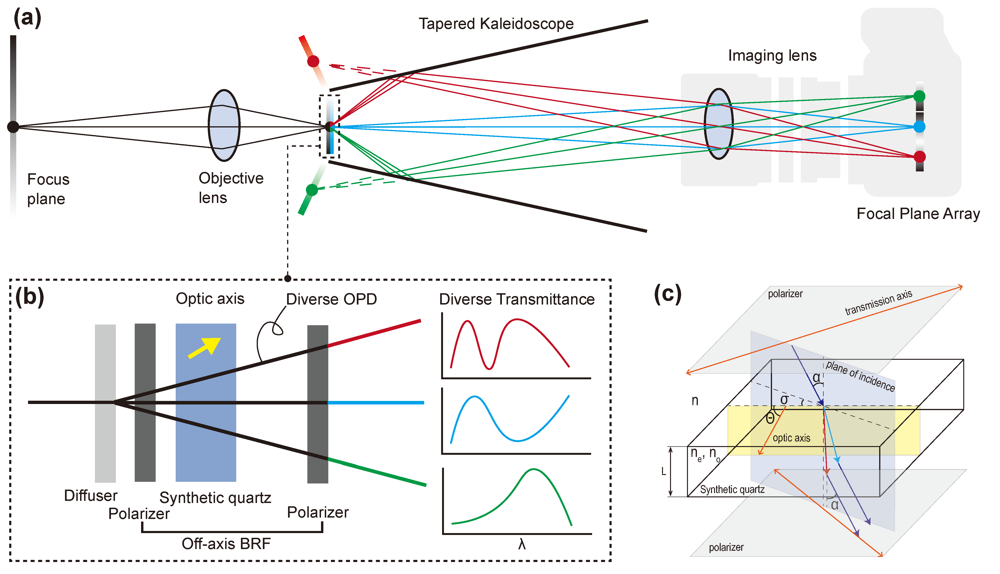
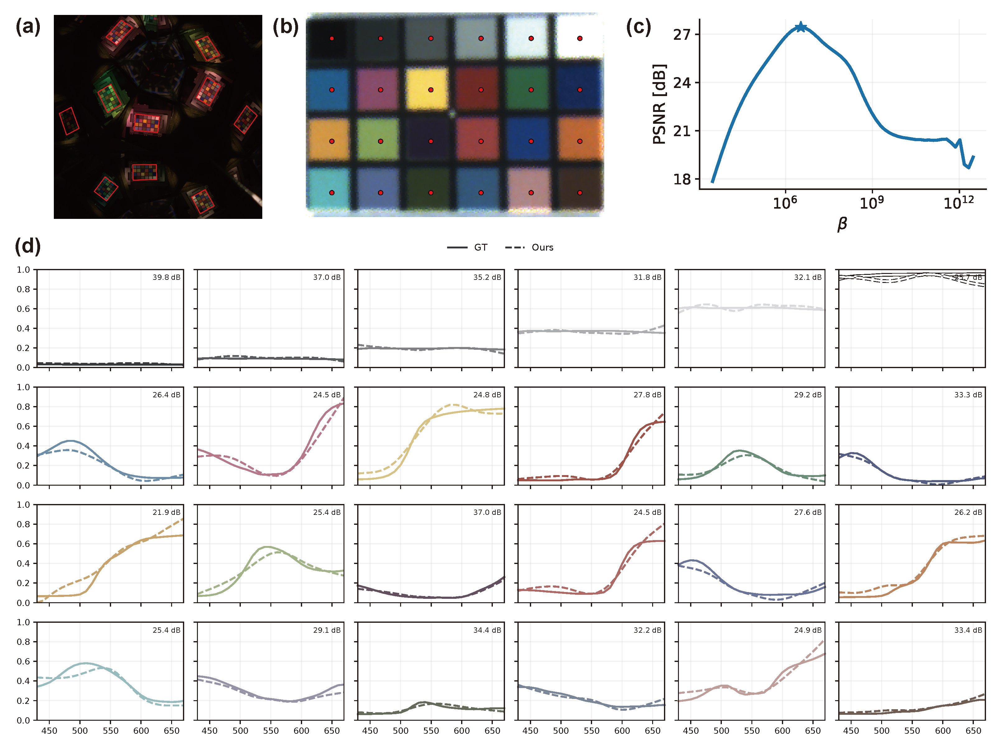
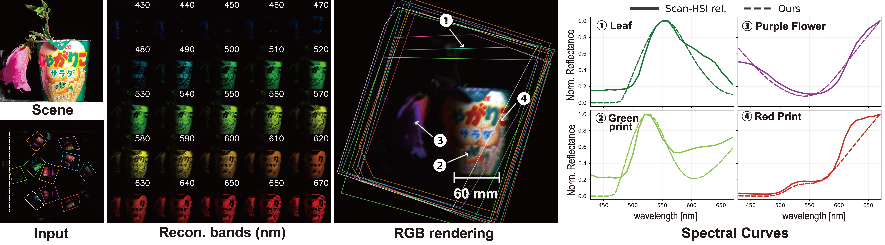

Snapshot hyperspectral imaging avoids sequential scanning, but systems that jointly achieve stable reconstruction, low cost, and compact optics remain limited. We present a snapshot hyperspectral imaging system based on angular-to-spectral diversity conversion. A tapered kaleidoscope creates replicated views with distinct incidence directions, and a directly attached birefringent filter converts them into view-channel-dependent spectral transmittances, yielding complementary measurements that better condition the inverse problem for more stable single-shot spectral reconstruction. The system preserves a simple pixel-wise linear model for fast non-learning-based reconstruction and uses only off-the-shelf components without relay optics or cascaded modules.
Our system converts angular diversity into spectral-response diversity in a compact optical add-on. A tapered kaleidoscope generates multiple replicated views, and a birefringent filter modulates each view differently depending on incidence direction. These complementary measurements are then used to reconstruct the hyperspectral cube.



@inproceedings{fujiwara2026a2shsi,
title = {Compact Low-Cost Hyperspectral Imaging via Angular-to-Spectral Diversity Conversion},
author = {Fujiwara, Kazuma and Funatomi, Takuya and Kitano, Kazuya and Fujimura, Yuki and Mukaigawa, Yasuhiro},
booktitle = {Computer Vision -- ECCV 2026},
publisher = {Springer},
year = {2026}
}